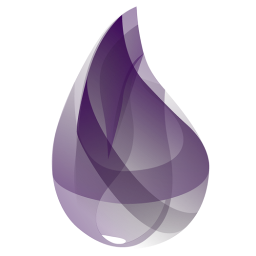

<div style="display: flex; flex-direction: column; padding-bottom: 2rem; align-items: center;">
    <h1>Nebenläufigkeit ganz einfach<br />mit Elixir und Erlang</h1>
    <div style="width: 80%; display: flex; align-items: center; justify-content: space-between">
        
        
    </div>
    <h2 style="margin-top: 2rem;">Martin Grotz, @mobilgroma, redheads Ltd.</h2>
    <h3 style="margin-top: 2rem;">Herbstcampus 2019</h3>
</div>